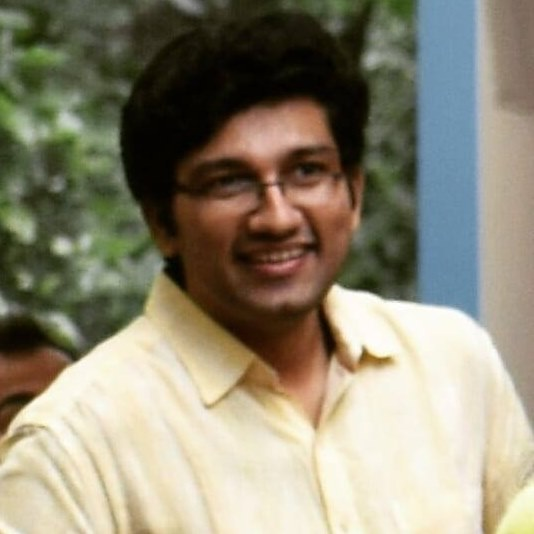

I am an Assistant Professor in the Department of Computer Science and Engineering, National Institute of Technology Calicut.
I completed my Ph.D from IIT Bombay in 2022 and was advised by Sundar Vishwanathan. Prior to my Ph.D I was a Junior Research Fellow at Institute of Mathematical Science, Chennai (IMSc. Chennai). I did my M.Tech from IIT Kanpur. My Master's Thesis was under the guidance of Somenath Biswas, Prof.Nisheeth Vishnoi and Prof. Piyush Kurur. I have spent a brief time as a visiting student at Microsoft Research, Bangalore (MSR India).